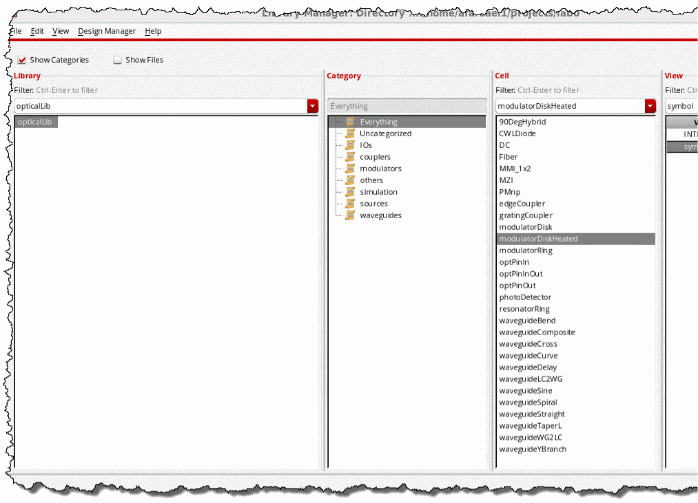

G
Using opticalLib to Create PDK (Virtuoso Photonics Option)
This chapter contains information about using the opticalLib library. The opticalLib library is a library in Virtuoso ADE. You access the library from the following path:
your_install_dir/tools/dfII/etc/cdslib/opticalLib
Ensure that you specify this path in the search path of the Set Library Search Path form.
The opticalLib library contains basic optical components, such as 90DegHybrid, CWLDiode, and Fiber. These basic optical symbols are used in building PDKs.

Refer to the following basic steps for creating a PDK by using the symbols available in opticalLib.
-
Add waveguide layers in the technology file.
Waveguide layers are similar to metal (conductive) layers and consist of the following components:-
techLayers()
These waveguide layers are usually placed after the metals and are assigned higher layer numbers to avoid conflicts with existing layers. -
techLayerPurposePriorities()/techDisplays()
Only thedrawingandpinpurposes are required to define these functions. -
layerRules()->functions()
The waveguide layers with mask numbers higher than metal mask numbers are defined as waveguides. -
constraintGroups()->virtuosoDefaultExtractorSetup->interconnect()->validLayers
These waveguide layers are added to support schematic driven layout.
-
- Create the target PDK library by clicking File -> New -> Library in the CIW.
-
Load the technology file created in step1 into the library created in step2 by using the SKILL functions.
dbCreateLib( "<libName>" ) techId = techOpenTechFile( "<libName>" techGetDefaultTechName() "w") if( isFile("techfile.tf") then tcLoadTechFile( techId "techfile.tf" "a") );if techSaveTechFile(techId) techCloseTechFile(techId)
-
Copy symbols to the cellview.
The symbols are created as Pcells. Ensure that you use the SKILL function to copy the symbol graphics properly into the schematic.cell = "<cellName>" src = dbOpenCellViewByType( ddGetObj("opticalLib") cell "symbol" "schematicSymbol" "r" ) dst = dbOpenCellViewByType( ddGetObj("<libName>") cell "symbol" "schematicSymbol" "w" ) schCloneSymbol( dst src '(0 0) "R0" ) dbSave( dst )
-
Rename pins and update pin labels. If pins are being mapped to the existing layouts, the symbol pins and labels must also be updated.
dbFindTermByName( dst srcPin )~>name=dstPin dbRenameNet( dbFindNetByName( dst srcPin ) dstPin ) foreach( shape dst~>shapes if(shape~>theLabel && (shape~>theLabel == strcat("cdsTerm(\"" srcPin "\")")) then shape~>theLabel = strcat("cdsTerm(\"" dstPin "\")") );if );foreach
-
Create the INTERCONNECT view. The INTERCONNECT view is a copy of symbol and it is used as a stop view.
dbCopyCellView(
dbOpenCellViewByType( ddGetObj("<libName>") cell "symbol" "schematicSymbol" "r" )
"<libName>" cell "INTERCONNECT" nil nil t ))
-
Create or update CDF for the PDK.
The CDF can be created or updated for a parameter by using the GUI or SKILL function.dst = cdfCreateBaseCellCDF( ddGetObj("<libName>" cell) )
cdfCreateParam( dst ?name "<name>" ?prompt "<prompt>" ?defValue "<defval>" ?type "string" ?parseAsCEL "yes" );cdfCreateParam unless(dst->simInfo dst->simInfo=ncons(nil) ) unless(dst->simInfo->INTERCONNECT dst->simInfo->INTERCONNECT=ncons(nil) dst->simInfo->INTERCONNECT->componentName=cell dst->simInfo->INTERCONNECT->instParameters=<params> dst->simInfo->INTERCONNECT->termOrder=<terms> ) cdfSaveCDF( dst )
Return to top